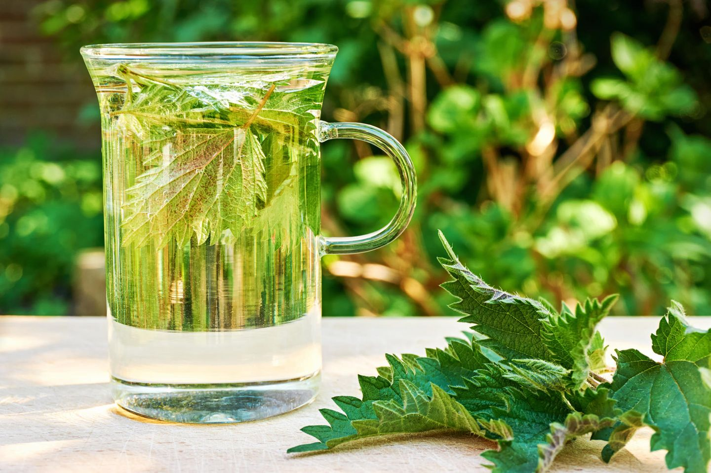
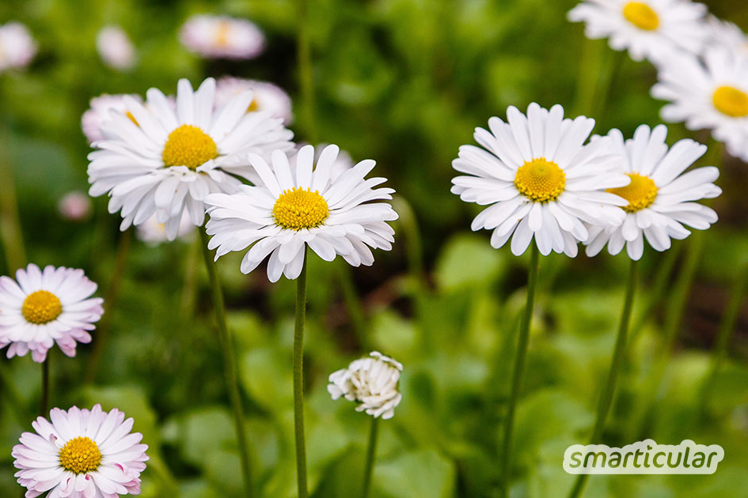
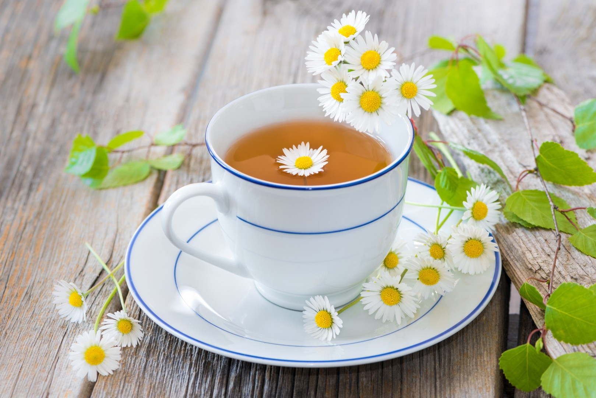
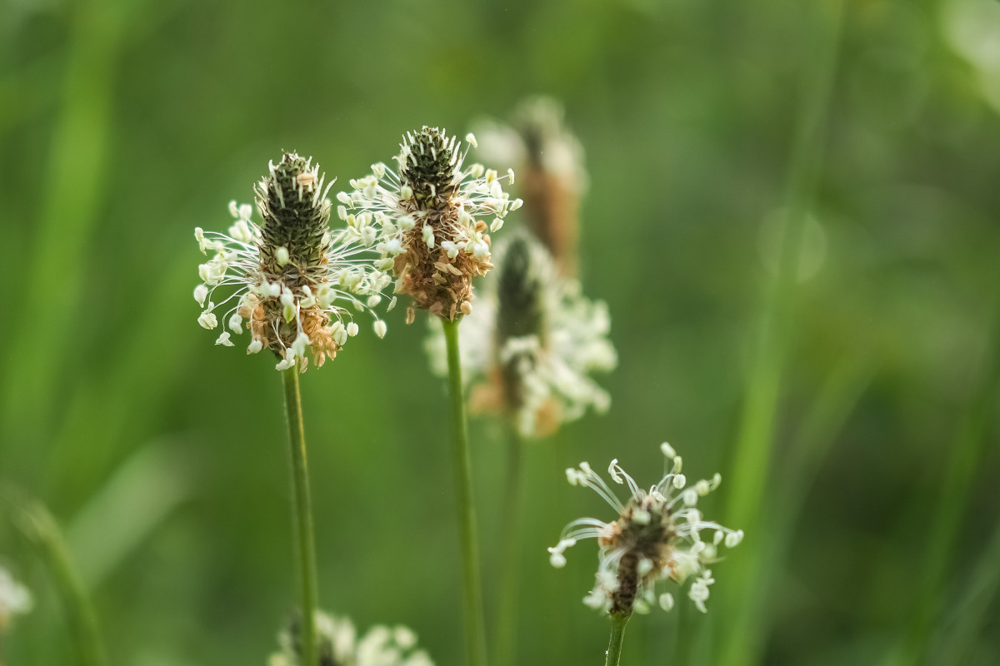
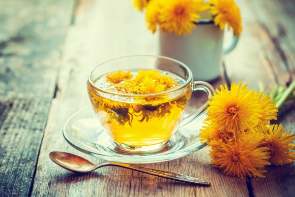

Bleib gesund - Tipp 3: Heilkräuter aus der Natur
Schon eine Handvoll einfacher Kräuter genügt, um uns von vielen Leiden dauerhaft zu befreien oder unseren Vitamin- und Mineralstoffhaushalt wieder aufzufüllen.
Vielleicht kennst du noch das Sprichwort: “An apple a day keeps the doctor away.” Die Zeiten sind leider vorbei.
Überzüchtungen, Monokulturen und Pestizide regieren die Landwirtschaft und führen zu einem Vitaminverlust unserer Lebensmitte. Ein Apfel am Tag reicht bei weitem nicht mehr aus, um die erforderlichen Vitamine und Mineralstoffe zu decken, die unser Körper braucht um gesund zu bleiben.
Statt Superfood aus Übersee mit weiten Transportwegen zu kaufen sollten wir unseren Blick lieber einmal vor die Haustür werfen. Denn Wald und Wiesen sind voll von heimischen Wundermitteln:
-
Brennessel

Brennessel hat etwa 7x mehr Vitamin C als Zitronen und wirkt entzündungshemmend, blutreinigend, entgiftend, wassertreibend.
 -
Gänseblümchen
 
Gänseblümchen hat 7x mehr Vitamin C als Kopfsalat, ist reich an Vitamin A, Kalium, Calcium, Magnesium und Eisen und stärkt das Immunsystem.
-
Breit-/Spitzwegerich

Breit-/Spitzwegerich hat eine antibiotische und entzündungshemmende Wirkung und ist eine der beliebtesten Pflanzen bei Atemwegserkrankungen.
-
Löwenzahn
Löwenzahn regt den Stoffwechsel an und wirkt entgiftend, harntreibend, leberschützend, magenstärkend, galletreibend und verdauungsfördernd.

… um mal ein paar der wundersamen “Bleib-Gesund-Heilpflanzen” zu nennen. Pflanzen können ihre Lebenskraft an uns Menschen weitergeben. Das Wissen über ihre Inhaltsstoffe und ihre Verwendung unterstützt uns beim Gesund bleiben.
Einmal sagte Hildegard von Bingen:
"Die ganze Natur sollte dem Menschen zur Verfügung stehen, auf dass er mit ihr wirke, weil ja der Mensch ohne sie weder leben noch bestehen kann."